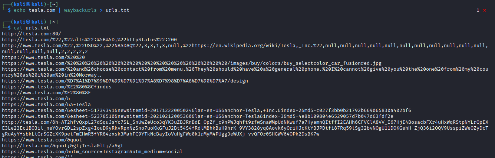

waybackurls (WayBack machine)
GITHUB:
https://github.com/tomnomnom/waybackurlsNOTE: the
search of waybackmachine urls is alredy integrated in:
◇ Assetfinder
Install as normal user
go get github.com/tomnomnom/waybackurls
Use
cat domains.com | waybackurls > urls.txt
#OR
echo tesla.com | waybackurls > urls.txt
